밤하늘 연출실 · 화면 설계
화면 설계와 실제 화면
주요 화면마다 왼쪽에 상자로 그린 와이어프레임을, 오른쪽에 실제 앱을 띄워 찍은 화면을 둡니다. 처음 쓰는 사람에게는 꼭 필요한 것만 보이고, 할 일을 하나씩 해낼 때마다 기능이 열리는 흐름이 중심입니다.
흐름
단계별로 열기
처음에는 자동 연출 · 감상 · 공유만 보입니다. 위 막대의 「다음: …」 버튼이 지금 할 일을 알려 주고, 누르면 그 버튼을 대신 열어 줍니다. 이미 쓰던 사람은 모두 열린 채로 시작하고, 도움말에서 「모두 열기」나 「단계별로 처음부터」를 고를 수 있습니다.
- 자동 연출로 첫 쇼 만들기곡에 맞춰 불꽃을 놓아 준다→ 사진 · 영상 · 나란히
- 감상으로 내 쇼 보기무대만 화면 가득→ 공작소 (빠른 설계)
- 내 불꽃을 서랍에 저장색 · 모양 · 크기 고르기→ 의뢰소
- 의뢰 하나 납품예산과 조건을 맞춰 채점→ 발사장 · 제작 공방
- 제작 공방에서 알 저장반구에 별을 붙여 만들기→ 작업대 · 실전 모드
처음 화면
간단 화면
내 쇼도움말다음: 자동 연출로 첫 쇼 만들기
쇼 제목자동 연출감상공유
▶0:00.00편집하기음악 ▾
무대 (화면 대부분) · 누르면 가까운 바지선에 지금 시각으로 불꽃을 놓는다
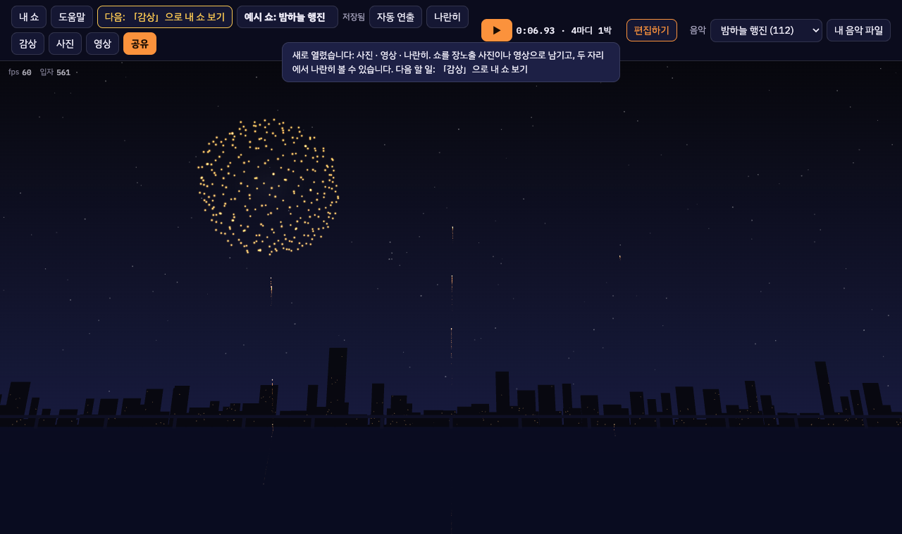
- 시간표, 설정 칸, 박자, 관람석·무대 설정은 숨긴다. 「편집하기」를 누르면 펼쳐지고, 고른 화면을 기억한다.
- 의뢰를 받으면 예산·조건 막대가 시간표 위에 있어서 편집 화면을 자동으로 편다.
편집
편집 화면
내 쇼도움말의뢰소공작소발사장자동 연출감상사진영상공유▶간단히
BPM · 첫 박 · 박자 두드리기무대 설정관람석 ▾효과음
무대
새로 놓을 불꽃
종류 · 내 불꽃 · 크기 · 색
종류 · 내 불꽃 · 크기 · 색
시간표: 음악 파형 · 바지선 1~3 · 다리 · 지상 틀 · 드론 (박자 눈금에 붙이기)
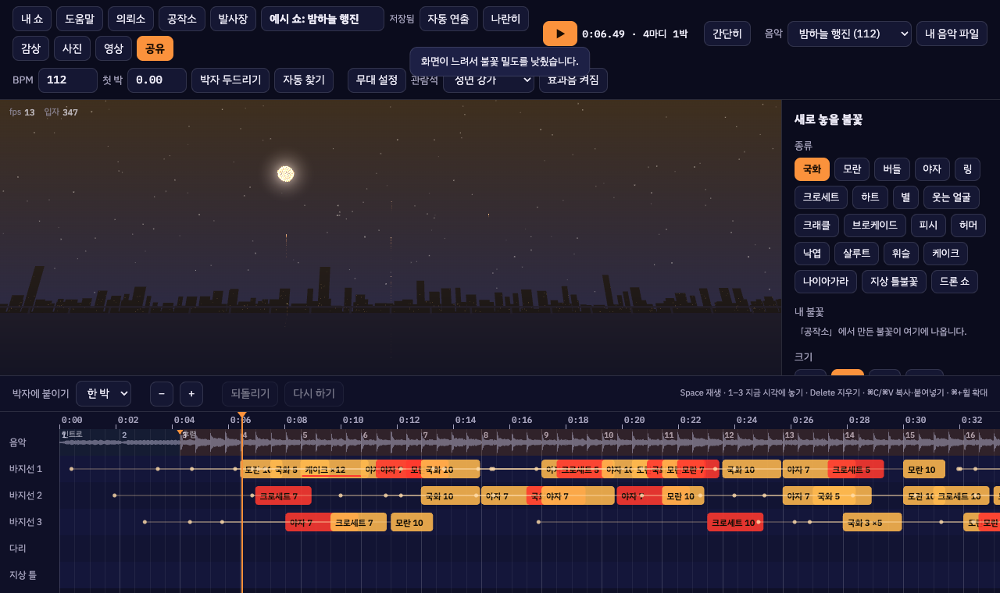
불꽃 만들기
공작소: 빠른 설계 · 제작 공방 · 작업대
시험 발사 무대
정면 · 옆 · 위 · 바람
정면 · 옆 · 위 · 바람
빠른 설계제작 공방작업대
알 단면: 반구에 별 붙이기
할약 · 종이 · 도화선 · 발사약
할약 · 종이 · 도화선 · 발사약
시험장에서 재 보기서랍에 저장내 불꽃 서랍
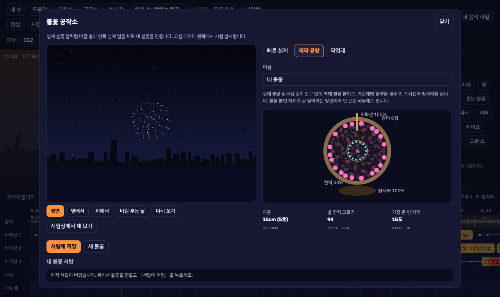
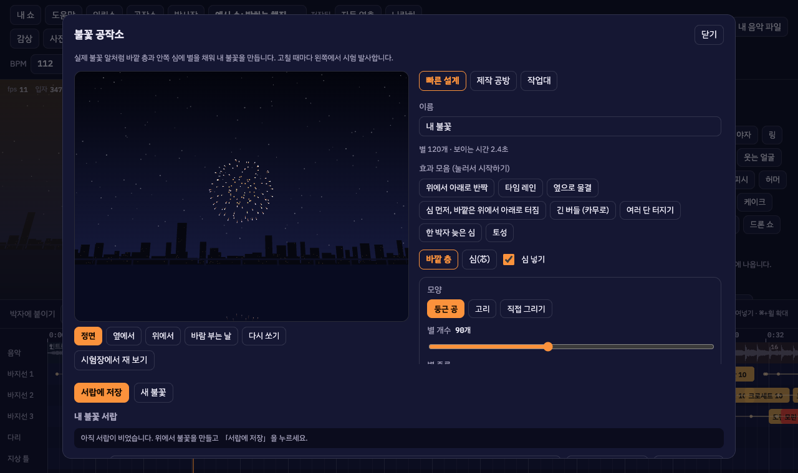
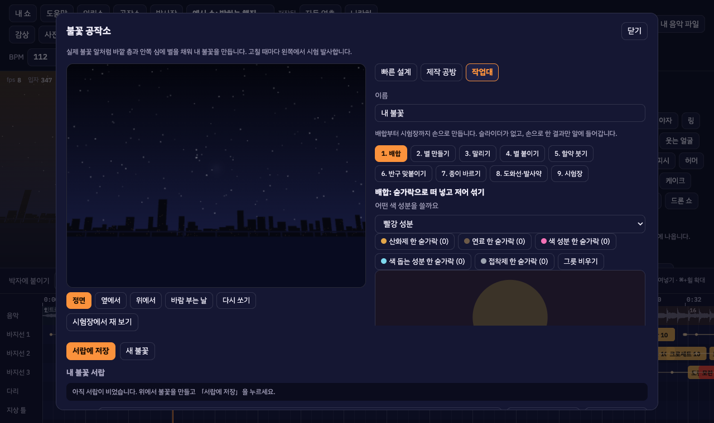
작업대 공정
1배합떠 넣고 젓기
2별 만들기굴리기 · 찍기 · 자르기
3말리기48시간
4별 붙이기만든 만큼만
5할약 붓기길게 눌러 붓기
6반구 맞붙이기돌려서 표시 맞추기
7종이 바르기고르게 문지르기
8도화선·발사약자르기 · 저울
9시험장결함 → 고치러 가기
현장
발사장 · 의뢰소 · 상영관
바지선 더하기다리지상 틀드론실전 모드 □
평면도 (북쪽이 위)
허가 구역 · 관람석 · 안전거리 점선 원 · 바지선 끌어 옮기기
허가 구역 · 관람석 · 안전거리 점선 원 · 바지선 끌어 옮기기
갑판 랙 배치 · 장전 계획 · 배선과 회로 점검
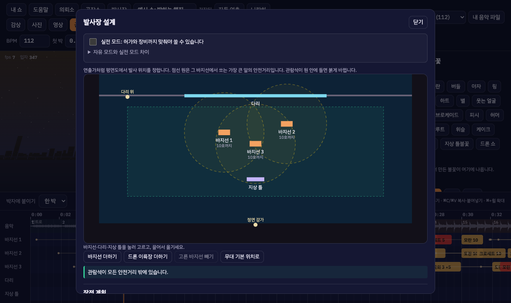
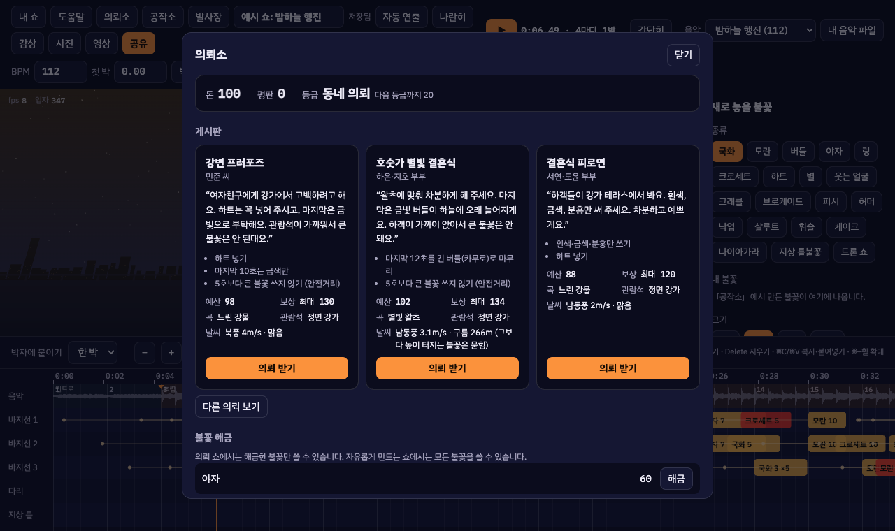
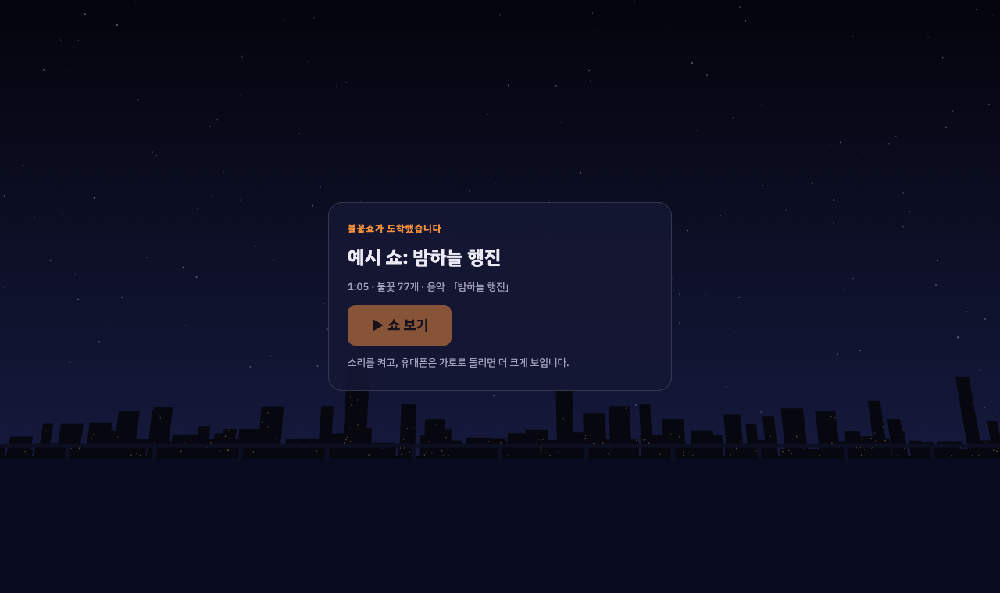
휴대폰
휴대폰 세로 화면
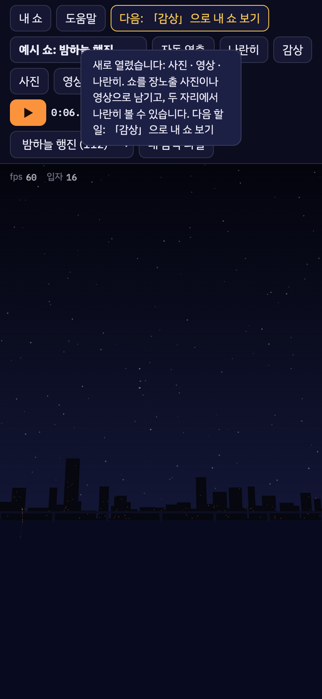
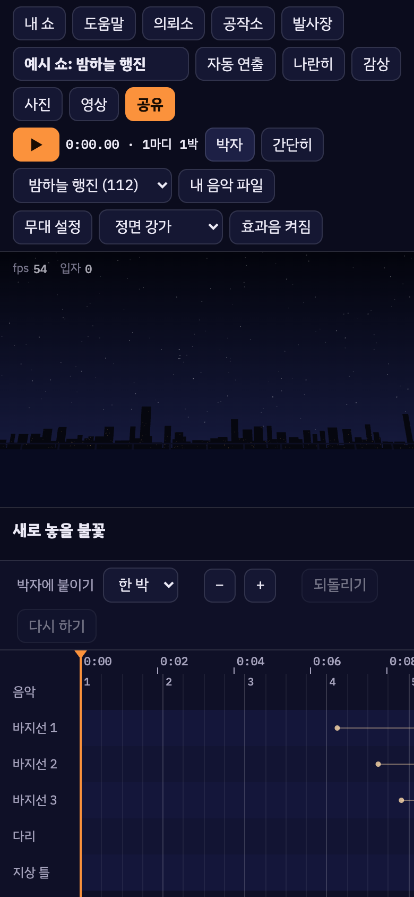
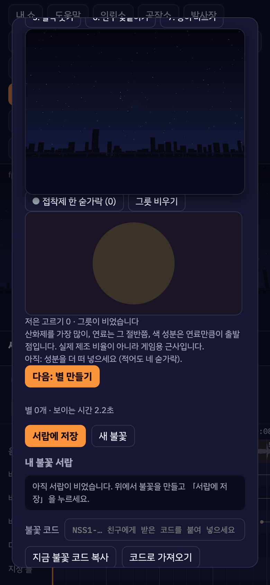
- 박자 맞추기는 「박자」 버튼으로 접어 둔다 (세밀한 편집은 가로 화면·PC).
- 손으로 끄는 판(굴림판, 반구, 종이 바르기)은 끄는 동안 화면이 스크롤되지 않는다.
화면은 Playwright로 실제 앱(개발 서버)을 띄워 1280×760, 휴대폰 390×844에서 찍었습니다. 소프트웨어 렌더러로 찍어 불꽃 밀도가 실제 기기보다 낮을 수 있습니다.